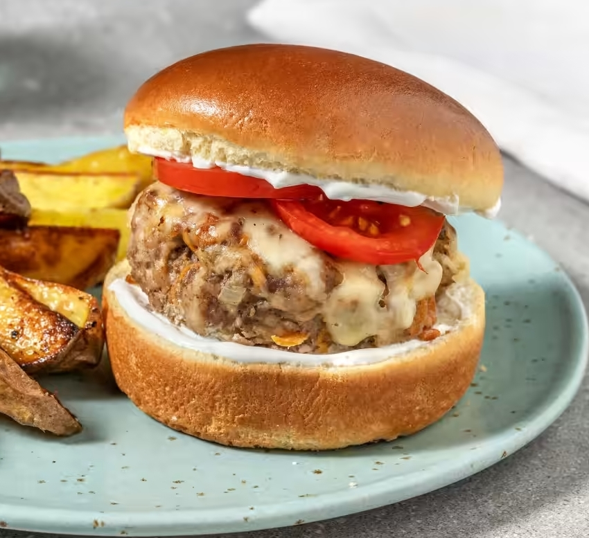

The art of hiding ingredients
Calling this a "secret burger" may be a stretch, but that's in the end what we are doing.
We are going to stretch this burger patty with vegetables and hide them, therefore making it
a secret ingredient.
This is an awesome way to hide it for kids that should but don't want to eat their
veggies,
and also a way to trick your brain into eating more vegetables as well!
Ingredients (for two burgers):
- 2 buns of your choice, but I recommend Brioche buns
- 1 carrot
- 250g ground beef
- 50g grated cheese (like Gouda)
- 100g joghurt
- 1 tomato
- 1 shallot
Instructions
- Wash or peel the skin of the carrot, and then shred it nicely. Dice the shallot nicely as well. Heat
oil
in a frying pan. Meanwhile add a pinch of salt to the shallot and carrot. Then add them to the
frying
pan and let them sauté for 3 minutes. Put them aside after that and let them cool down a bit.
- Cut the tomato into thin slices. Add the joghurt to a small bowl and add salt and pepper to your
liking.
- Add the ground beef to the carrot and shallot, salt and pepper it and mix it through. Then make
burger
patties of it. Use the frying pan from the first step and fry the patties for 4 minutes. After that,
turn them and put cheese now on top of the fried side, and continue frying for 4 more minutes.
- When you are done with the patties you can add the buns to the pan and fry them for 2 minutes on the
inside. This step can be skipped though.
- When everything is done, add the joghurt-dip to the buns on both sides, add the burger patty to the
lower half, then add the tomato slices and put the top on. Enjoy!